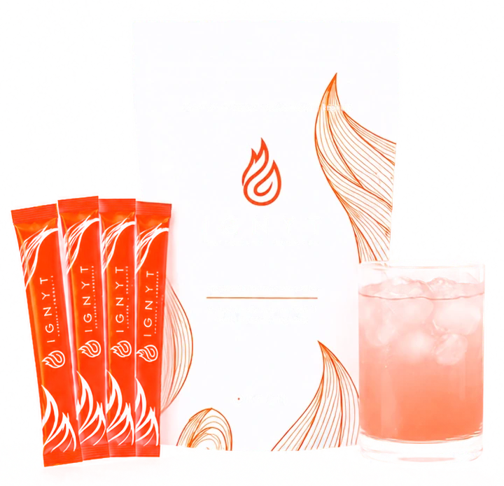

One more step
To do this, please text SAMPLE to {{custom_values.nueva_rep_phone}} right now. This will allow us to confirm you're a human and confirm your shipping address.
Text SAMPLE to {{custom_values.nueva_rep_phone}}Text the word SAMPLE to
{{custom_values.nueva_rep_phone}}
That's it. Text us now to confirm. We are pumped for you to try IGNYT.
What happens next
To {{custom_values.nueva_rep_phone}}, right now. It confirms you are a real person and it confirms where the sample is going.
Three single serve sticks, packed and mailed to the address you confirmed.
One stick into 8oz of water, once a day. Use a shaker or a coffee frother, not a spoon. Better over ice.

While you wait
IGNYT is ORYGN's powdered metabolic booster, built on patented bioactive peptides made to the ORYGN PURE standard. It supports three receptor pathways rather than one: GLP-1, GLP-2 and GIP.
It's a cran-apple drink, not a chalky shake. Most people take it cold with ice.
Text SAMPLE now and we will get it in the mail.
* Subject to sample availability. One trial per household while supplies last. These statements have not been evaluated by the Food and Drug Administration. This product is not intended to diagnose, treat, cure or prevent any disease.